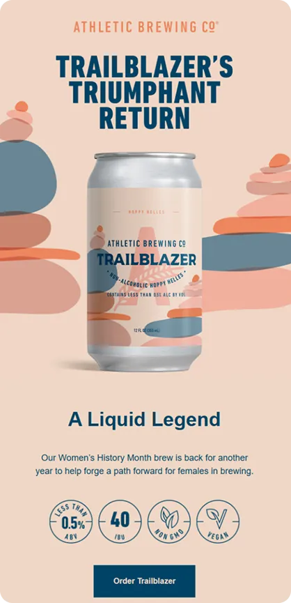
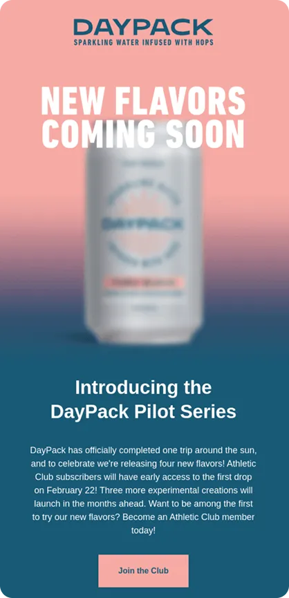
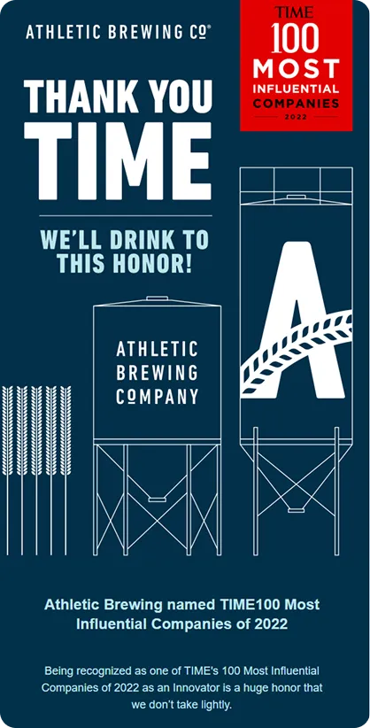
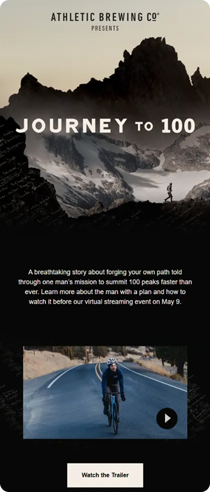
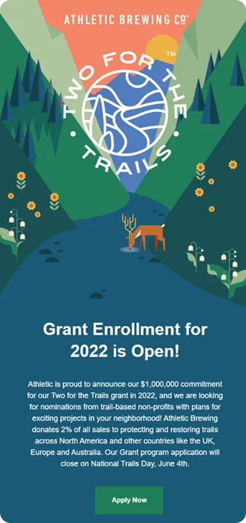

How do you make non-alcoholic beer feel this cool in the inbox? Athletic Brewing achieves this with bold visuals, confident branding, and emails that seamlessly blend product, lifestyle, and purpose in a way few beverage brands manage to pull off.
In this episode of Feedback Friday, Matt Helbig and Mike Nelson look at a series of Athletic Brewing emails with a live RGE community. They react to the design choices in real time, discuss what stands out, and highlight the details that shape the overall experience.
If you work in email design, DTC, or beverage branding, this breakdown offers a fun and insightful look at how a fast-growing brand presents itself in the inbox and what makes their approach worth studying.
TL;DR bullet points
- Live text and solid alt text help keep key messages readable when images are off.
- GIFs, blur, and motion should support the story, not make copy hard to read.
- Alignment, color contrast, and dark mode make long emails easier on the eyes.
- Clear CTAs and practical details, such as dates or runtimes, increase relevance and clicks.
Matt Helbig: Yes. Woo. Feedback Friday. Feedback Friday. Okay, great. This week, we're taking a look at Athletic Brewing. So, a couple of us on the Really Good Emails team have gone sober. We're trying that out. This brand definitely stands out. It's quite a significant thing in the United States. You know, we see it in bars a lot. They are an alternative to beer. It's called Athletic Brewing. They target athletes who want to enjoy a drink without regretting it the next day. They have some really interesting emails that I thought we could review.
(See the full email here)
So this first one is one of the most popular saved on the Really Good Emails site. And what I like about it is, I really like the color palettes here. We're actually using Parcel right here to preview it, as we discussed before, but there are a few things we can examine. For instance, if we turn off the images here, they still do an okay job of using a lot of live text to make the image load. They could do a better job with some alt text, as we can see, especially in this area. But a pretty good job overall in keeping it really simple and still making each section stand out with unique colors. So, I thought we might go to the audience and have everyone share one positive thing they really like about this email, and then perhaps something they'd like to see improved in the future.
Mike Nelson: This is something we do. We try to stay positive. You may find things that you don't like about this, but please also point out the aspects you do like about it. Thank you.
Audience: I love that hero. What a striking hero. Very aesthetically pleasing color palette. This is definitely something I dig. The only thing that I didn't love is that it looks like maybe reviews. Scroll down. There was a lot of text. Yeah. Trailblazing. Teammates. Okay. So it's like reviews, I think, from their team, I assume. I like that. I would like to see that condensed. I'm not likely to actually stop and read all of that. And I think, where's Gavin? Gavin's at? I think you could use a GIF here. A GIF GIF through, yeah, go ahead. Carousel GIF to condense it down to three frames instead. That would feel a little more engaging, perhaps a bit more eye-catching, and then consolidate that section a bit.
Matt Helbig: Yeah, I agree. I feel that when you see people's names, I really like to see their faces as the next step. Yeah. So you can connect with the person who's actually saying it, meet them, and be part of their team.
Audience: Yes. I am very lazy when it comes to email as a reader, and I prefer not having to jump through hoops. So the bottom couple CTAs where I could directly go in to order the brews or merch or find a store, I really love that, because I'm a lazy email reader.
Matt Helbig: This is a trend that I really like to see; the alternative navigation bar is actually at the bottom. They are almost like these quick links, so you can jump around, but they don't steal the show right when you first open that email. So, putting them at the bottom, along with the social links, I really enjoy.
Audience: It's essentially translating a website-like experience into the inbox.
Matt Hebig: This is kind of like that newsletter template, and I think they are kind of picking newsworthy sorts of things to include. They're maybe trying to sell you on this, but it's a light sell for sure.
Audience: Do you know what the subject line is?
Matt Helbig: That would be "Trailblazer Hop. He's back and blazing trails."
Audience: Cool. Do they also have a pre-header or a preview text?
Matt Helbig: I don't think they might have that actual hidden pre-header. Oh, there you go. There it is. Yeah, there it is. These are the ones for the trailblaze. Trailblazers.
Audience: It's cool. I personally quite like the colors throughout it. I like the CTAs; I appreciate how the background color comes through in the text. I think I saw on the bottom that the only thing I would be worried about is the color in dark mode, specifically how it would appear, and the contrast ratio - is it okay? And then the one other thing for me is, this is borderline, but the amount of center-aligned copy is, yeah, beyond four.
Matt Helbig: I think three is usually what we like to see, but it can be a little long.
Audience: Yeah. But I think it's short enough for sure.
Matt Helbig: And then, yeah, nitpicky as well, but even some opacity or some hover effects on these could be kind of a fun way to make these stand out a little bit more.
Audience: Could we please see the mobile version? I wonder how the alternative navigation bar at the bottom is implemented. Okay. Nice.
Mike Nelson: I want to remind people that these are really top emails that we see, as we receive a lot of emails, so our nitpicking is just us being nitpicky. But we do love this. Would you like to proceed to the next one?
Matt Helbig: Sure. We can take one more in the back.
Audience: So, essentially, the header, the headline, is not live text. Obviously, once you eliminate the imagery, the main kind of triumphant return, your main message just disappears. But other than that, really, really good. Love, love the colors. As Ben mentioned, the color contrast in some of the combinations is a little too close, but that's about it, really.
Matt Helbig: Yes, I completely agree with you that this headline should have some good alt text, and perhaps they could even style that alt text to match the blue color, potentially, or something similar. All right, we're moving on to the next one. Number two, a very popular email as well, see it pop in.
(See the full email here)
This one features a GIF, which makes it a little blurry, giving it a teaser-type email feel. Catches your eye. At least, that caught my eye. And a very simple layout, pretty similar to the previous email. I do think some of these colors might be too contrasting for me, but overall, they are relatively similar in tone. Just popping in some different content and trying to catch your eye a little bit with that GIF at the top. This may be moving just a little too fast for me, so I would consider slowing it down a bit. Any thoughts, feedback, compliments?
Audience: I do like that GIF. I find that difficult to read. And again, if it were live text, it might be nicer. Yeah. I think it was just annoying for me because it feels so simple. If they just pushed the can down a little, then the text would be fine. It is, I, I don't know who signed that off. Oh, what do I like about it? I like beer. There you go.
Audience: I like the concepts. I like quite a bit of teasing new flavors coming. I find this imagery very frustrating because that's what it looks like when I don't wear my glasses. So instead of being intrigued, I'm frustrated. I almost wish I could see something like that, maybe not a GIF, but something that shows multiple flavors, like how flavor or mixed packs come in a box. I think that would work better for me than this. I also don't know why the can is so big. It's fricking huge, you know.
Matt Helbig: Yeah. This is an interesting trend, like the blurred. I kind of like the more pixelated blur, almost like a censored thing, with maybe like an animation on that. I think they've carried that over from social media to email in some ways. And it always makes me want to click in and uncover what that actually is in front of me.
Audience: One thing I like, and one thing that could be cool. I like how, yeah, the GIFs slightly do my head in a bit, but I really like how the colors seem to blend into the live text, with that solid background. But it kind of looks like it's one thing, so that's quite cool. I'm not sure, but a hover effect would be quite cool. So, if you were to hover over the can, it would reveal its flavor as a small bit of interactivity. You can create a hover effect, swap the image, or even switch to another GIF image, allowing them to do something fun there.
Audience: I actually received the same positive feedback as Jim did, that the imagery seamlessly integrates into the live text in the background. However, the negative aspect is that when you select the first image in the previous email, it remains the same, I think. So the logo and the first image are actually the same. It's generally expected that when you click on the logo, you will be directed to the homepage. This means that the link is actually the same, so it leads to the same landing page. So that's the thing I don't like.
Matt Helbig: Yeah, maybe you could slice this or just have that as its own sort of thing.
Audience: Yeah. It's a small effort for something that should be best practice.
Matt Helbig: Yeah. Probably works better too, maybe for alt text, having that logo by itself. Yeah, have the more descriptive thing. And then one thing I did notice from the other email is that we're really pushing the center text for me here. It's getting a little long for that.
Audience: None of the copy inside the email matches the imagery or the call to action. And I think that's sad, because the copy is kind of okay. It could be better, but you could have so much more fun with the imagery based on what the copy is. And I often feel that in beautifully designed emails, there is a significant disconnect between what you're typing and the way the email appears. I just feel like it says, “Stay hydrated, drink Day Pack,” and then there is a conveyor belt of individual cans. It is just a total mismatch. It is not good for the brain.
Audience: As someone who enjoys a good beverage and shops around, I often find myself selecting drinks based on their can art, which is particularly prominent in alcoholic and alcoholic-adjacent beverages, as well as their design. Proximity to product, their can art is really, really close to both the other one and this one. And it feels like something I would pull off a shelf if I saw it in email form. They are very obviously cohesive and not jarringly separate.
Matt Helbig: Yeah, I agree. Alright, let's go on and try some different emails from them.
(See the full email here)
They claim to be one of the 100 most influential companies. They are thanking you for this. They include some live text up here, discussing their influential company. They have this signature. This is all center text again, which is getting a little hard to read. But I do sometimes like a signature in an email with a face, potentially. I do not think it always works in a letter form, but I think it can sometimes stand out if it is authentically done well enough. And in this GIF, I think it is a little big. I think it's about two megabytes, so they could maybe work on that. But overall, I do sort of like this animation to catch your eye a little bit. You know, I think they may be pushing this template a little bit more because it is “spread the word,” you are asking for a share, but maybe this is not the right sort of format to lay that out in. Any feedback?
Audience: First, I like the concept of sharing. You know, sometimes I think we forget that we are encouraging people to connect and share bits and pieces, or even reply. Email is a two-way channel, so getting people to take action with it is a plus. Whether it works or not, I am unsure about this option; however, I think that overall, I do not like emails being sent from a CEO or someone in a similar position. Who kind of cares?
Audience: I would like to say that I disagree with your opinion on that.
Audience: I personally don't like this, but if you do, it feels a bit too lengthy from my perspective. I think there is probably too much. If there is more to read, then direct them to a place where they can continue reading and potentially convert from that point. You are saying this is my opinion. Okay, I could be wrong.
Audience: I think that for me, when I think about local breweries in Vancouver, which is where I am from, and the ones I am on their email lists for, I feel a connection to them. I think this is a fun brewery that I enjoy visiting with friends or ordering from online. And to see an email from the founders, who have probably put in a lot of work, I would feel excited for them that they are on the Times 100 list. It's nice to have a refreshing email like this instead of the previous ones, which are telling me to buy. Other emails, like those from PBR or other big beer brands, if I received this email, I would be thinking, 'Why am I on your email list?' and congratulations, you are already a huge beer company. But ones like this I find a little bit touching, although I do agree that the quotes are too long and I wouldn't read them. But the excitement is there with them.
Audience: I get that, and I agree. I agree with that part. If it is a smaller brewery, then, yes, I suppose it does work from that point of view, but overall, emails from CEOs.
Audience: Yeah, I am going to back up Gavin on this one and say, first of all, Athletic is really big, so they are huge, at least in the US. So they are big. Similarly, many meetings could have been conducted via email; this email could have been shared as a social media post. So if I were the email marketer, I would say, We do not need to send the fucking email about this. Put it on social.
Matt Helbig: Yes, they might have done both, potentially, but this could be a little self-serving. I know this is intended to be a thank-you email, and perhaps they could have included a picture of the team or something from the brewery, you know, “let's celebrate this together.” However, perhaps this could be seen as somewhat self-serving in some ways.
Audience: I love how positive this conversation has been. The colors look nice. There is a balance again. These are, as Matt Cook says, strong opinions loosely held.
Audience: It is okay. I find it challenging to overcome the initial impression that the first image is somewhat overwhelming. You do not know where to look. It is full of text everywhere. Yeah, it is way too much, in my opinion. And they try to add a personal touch with the signature. It is a nice try, it is a nice touch, but it is not succeeding, in my opinion.
Audience: I will be brief. That hero, did anyone else read it as, like, “it is time to thank you”? Does it need a comma? I do not know. Yeah, it is like, yeah, “time thank you.” I thought they were thanking me when I opened it, or, you know, when we opened it.
Matt Helbig: I think it is a play on both. I think it is both. I do not have an answer.
Audience: Oh yeah. The GIF at the bottom is really wobbly. I just feel seasick looking at it. If they stabilize the image, they will also save a lot on file size. Additionally, the imagery is generally of the tin. I do not know what is inside the tin. I understand that the can art is important and it looks good, but you could put a glass next to it with something in it, because I don't know what that is. It does not make me want to drink it unless I see it.
Audience: As a social person, I can say, Why would I spread the word? Can I win something? You need to provide something. People need a reason. They are not just going to do it.
Matt Helbig: Okay. Positivity train, moving forward. Okay. All aboard.
(See the full email here)
This is another one, somewhat different from the newsletter, employing a different approach. I mean, I am impressed that they have been able to maintain the same number of templates while trying some new content, even if the templates are pretty simple. So I think this one is trying to tell a story to that 100. I kind of like this play button off-center. That could just be me, but I do sort of see that when you add a play button to a video, it may get more engagement. Perhaps not, but it's worth trying instead of just a “watch the trailer” CTA. Scrolling down, you see these dates listed here. Maybe this works, but I do like how it is a little more muted in terms of colors and tries to incorporate some of that branding. This one is a little longer than the others as well. And again, with that center text, maybe getting a little bit hard to read. Perhaps on mobile, they could try a left alignment at least, as this becomes quite difficult to read. Do you have any more feedback on these in the front?
Audience: Yeah. Hi, my name is Olga. I actually have a question. Are we still talking about a brewery that sells drinks? Because at first I was like, okay, we are talking about the same template, and I thought we were talking about the same product, but this looks like an athletic journey email to me about a company that does something like, I do not know, shoes for climbing or hiking, or something for climbing or hiking. Or at least to a point, I was thinking that maybe I will see a guy in a tent with, you know, the can that you can take with you. I'm not sure why you would take that camping, as I would assume it is heavy, but you could tie it in somehow. So, I loved the last emails because you could tell what the product was, and you didn't have to think. And then there's a tent screening, and I was like, 'What are we watching?' But overall, the email is very nice. I love how the image flows with the background. I mean, it is all very pretty. But just, like, what is the brand? What is the product? Why am I getting this?
Matt Helbig: Yeah, it is interesting. It is almost like receiving a different type of email from them. It does, you know, they are named Athletic Brewing, so I do think they try to support athletes, and maybe they, it looks like they did make a film about their product, and, you know, or sponsored something that would hopefully, you know, now that you said that, they are like athletic growers.
Audience: Yeah, this is not a criticism at all, but it is kind of like, “oh, it could be interesting,” depending on how long the trailer is and therefore how big a video file size would be. They could even experiment with, and I appreciate this, only working on certain clients, such as embedded video, if they are trying to get people to watch the trailer and then book a ticket to one of the screenings. Something that we tried at my company was embedding a video, and we saw that it had a massive effect on people clicking through to the things we wanted them to click on. This was because they were less likely to leave to go to YouTube and get distracted by the sidebar or other content. So it could be something cool too.
Audience: I also like the design. I think, generally, and also considering the emails as a group, it is really consistent. You know straight away; it is like, 'Okay, I recognize this brand, I get it.' One comment just about the GIF and the play button. I really, really like that they have backed it up with an actual CTA to click as well. So if you turn images off, you still get that button, and you are still pushing people to that. It is just a real minor thing, but I think it’s really good.
Audience: One thing I noticed was the lack of personalization, whether it was using my first name or understanding my buying cycle. If I have already purchased this product before, you don't need to bombard me with the brand every time. But there is no personalization.
Matt Helbig: Yes, I would be curious to know what kind of segmentation they are using, but it does seem like a batch-and-blast, one-size-fits-all approach. I think they might have some, like, if you order, they might send you a survey about whether you enjoyed the product, and they might ask you if you want to reorder it or similar things. But these newsletter-type, wider-audience emails are relatively the same, I think.
Audience: Again, I, the lazy email reader. I really liked how the screening times are included in the email itself, because if I receive this, I assume they may know my location, and I can easily check if this movie or whatever is playing in my area. The one thing that I would want to see from them is, honestly, just a little timestamp of how long that trailer is. As I am a lazy individual, I want to know how long this video is before I click on it to watch. And if it is like a minute or two, I'll probably go in and take a look. If it is 21 minutes, I will probably start it and be like, “I will watch this later,” and then never go back to it. But that would entice me a little bit if I knew how long this trailer was.
Matt Helbig: Yeah, maybe mention the length in the body copy, like “a two-minute trailer” or something. That could be, if not on the image, like you said. Sweet. Alright. Any more for this one?
(See the full email here)
Okay. I think we have one more, and this one is celebrating Earth Day. So, keeping some of that branding that we saw in that previous email. I do sort of like the branding that they are able to do, as the branding is really important for some of these products to stand out from each other on the shelf. And this one always kind of catches my eye. I like how this sort of leads in and brings your eye down to this main copy header here. The text is a bit lengthy, but I think this really stood out to me due to the coloring, which makes it pop, and the way it flows seamlessly through this email into the different sections. So I think I would like to see when brands are able to do that. And then, down here, they do have a callout for text alerts, shout-out text alerts, which is a nice feature. They also have a little bit here, so a slight change-up, trying to capture some interest in these sections.
Audience: Can you go up to the top? That trademark symbol hanging out there is driving me bananas. I wish they could just move it to the end of the “T,” or, I guess, maybe if it is at the end of “Trails,” and just make it smaller. Unfortunately, I can no longer unsee it. And then the casing on all of their headlines is also driving me a little bit bananas. It looks more awkward on a few of them. So, super cute. The illustrations are amazing. But the casing, no.
Audience: I notice some inconsistency in their level of description, where they are overly descriptive in some areas and less so in others. If you go up, they wrote out “1 million dollars.” I feel like they could have just put “1M” and saved some space. However, when we reach the button text, I believe it was actually at the very bottom, offering the option to sign up or learn more. So I love how chunky their buttons are. I am definitely drawn to them, but “Learn more,” I wish that would be, like, when you are in the “get 10%,” you know, “join the club”. Literally anything else. It feels really lazy to me, just “Learn more.” It is not compelling at all. It does not refer to the sale, like the fact that I would be putting up money for it. Some of their copy choices are a bit odd, but I wish those CTAs did a bit more work to create intrigue.
Matt Helbig: Yes, it is something that, if saved, I think could be interesting. It is almost as if they ran out of ideas to keep it the same length as this one, potentially, and they missed the mark for me.
Audience: I love the illustrations. I might even hang one up in my room. It is really cute, the little van with the little tents. It is very Colorado for us. Yeah, I like that a lot.
Audience: Yes, I was also going to say that I love the illustrations; they feel like storytelling to me. You are scrolling through the email, and I am like, “Oh, I just could imagine, look at the stars, and there must be two people.” And then I see “friends on a mission,” and I think, “Oh, that must be friends.” And that can prevent, for instance, looking at the stars; I am thinking about the different constellations. And then, the images are truly awesome in the way they evoke certain emotions, which is awesome. And while I do totally agree that the CTA at the bottom about their club could use, like, what is it, a club? Is it an email list, an online forum, or a Facebook group? Do I need to pay for anything? Perhaps something like “Sign up,” or at the very least, “Join us at an event,” or something similar. But I do love how different the two CTAs are at the bottom. So, it is not something that is very noticeable in email, but on mobile, it totally loses its newness and uniqueness. On the desktop, it is very nice to see the two CTAs, and they stand out. It makes me think, “Oh, that is cool, not something that I usually see.”
Matt Helbig: Yes, as you said, I think this is the right way to use a two-column layout. I need more smaller text; it would be kind of hard to read.
Audience: I love the color chunking of this from the perspective of ease of consumption. I would open this email again if their emails continued to be like this, because even if I don't care, I know exactly what I am supposed to pay attention to. And even the language is more relaxed, as seen in phrases like “Try” as a CTA. I do not wish to apply, nor do I wish to check out your partners, but I am not being bombarded with this information. I am not being bombarded with numerous logos, and, yes, this is a lot of text, but I can skim over it. I would happily delete this and open the next one, even if I hadn't clicked anything, because it is not causing me harm, screaming at me, or requiring me to do tons of visual back and forth just to understand what the thing is. Love that aspect of this.
Audience: Can we see what it looks like without the images? I was a bit concerned that this is inconsistent with the other templates, where there is a spacer between each one. I suppose this doesn't look too bad, but from a consistency perspective, it is a little off, even though the imagery is always impressive. And with the copy, it just seems long, so it's pure reading, center-aligned.
Matt Helbig: For sure. I am glad that at least these are not baked in. I think I see many brands use their brand font as a header, and it kind of bothers me, to be honest.
Audience: Before we get into it, the center alignment is actually not that bad. So, if you take a look, they have a good example and a semi-acceptable example. Here, if you take a look at this chunk, it is pretty justified, with right and left alignment. And if you go a little bit further, this is actually not that bad of an example. If you go down, I think it is in the beige color. You have indents and outdents, right? So that is when you want to be more considerate about your center alignment. But if you can keep things pretty close to being justified, you do not actually have to worry too much about center alignment.
Audience: Yeah. Seeing all these different emails, I wonder if they have some design guidelines. Because these emails look kind of, yeah, too inconsistent. There are some details that remain the same in each email, such as these chunky CTAs, but other than that, it feels like it could be an email from a different brand each time. So, yeah, the colors are different, and some of the other stuff is different as well.
Matt Helbig: Yeah, they are pretty loose, trying, I guess, to match some of these colors with the illustrations, or in the previous ones, the overall images. And I definitely think it is a good callout that when you are going to stack colored text over another color, you should check the contrast ratio to ensure it works. Okay, well, that is it for Feedback Friday. Thank you so much for reviewing these emails.
Nice job, Athletic Brew.